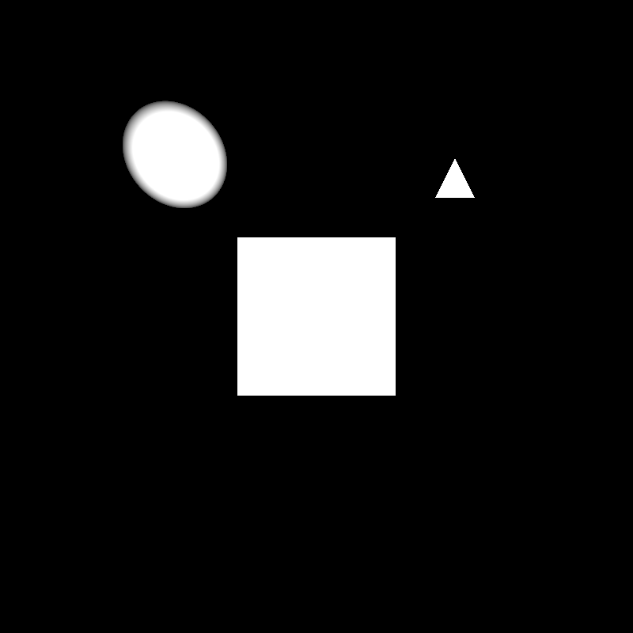
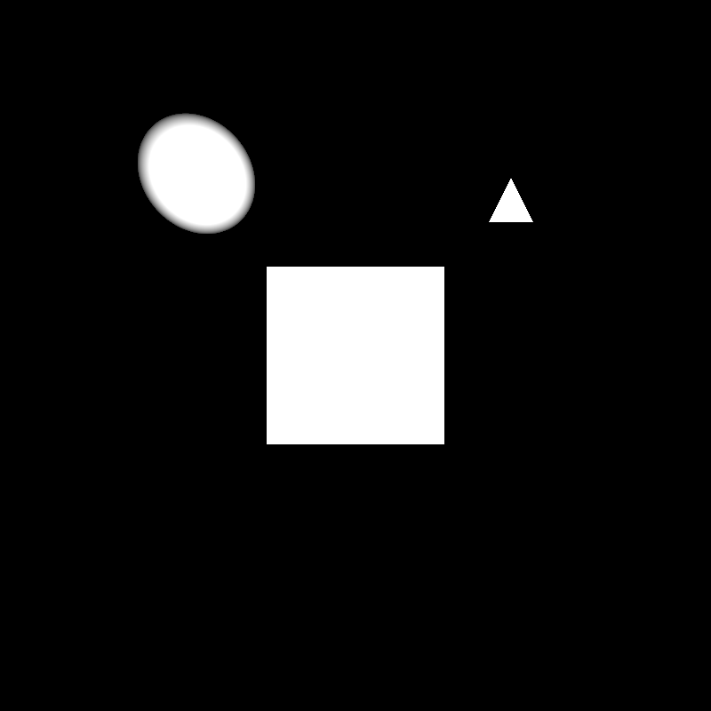

Ray Tracing
Last edited:
Hello,
Welcome to my blog. Today I will introduce the first part of the ray tracing. I am coding ray tracer for course CENG795: Advanced Ray Tracing in METU. Last year, I made a ray tracer for CENG477: Computer Graphics course. Because of that, in the first part of the creating ray tracer journey I used my previous experience and code. In this blog I will explain this implementation.
In this blog post, I will also compare ray tracer performance by brute force implementation and BVH accelaretion version. In the next part of the ray tracer, I will impreve my accelaretion structure to improve the speed.
Brute Force Implementation
In the first part of the ray tracer implementation, I used a brute force algorithm. In this implementation, I check each object in the scene for each ray. This approach is not efficient and not suitable for complex scenes. In the following, I will explain the steps of the algorithm.
1. For each pixel in the image, I calculate the ray direction by using the camera position and the pixel position. Then, I find the closest intersection point of the ray and the scene objects.
BVH Accelaretion
In the second part of the ray tracer implementation, I used a BVH accelaretion structure. BVH is a binary tree structure that divides the scene objects into two groups. This structure is used to reduce the number of intersection tests. In the following, I will explain the steps of the algorithm.
1. I build the BVH tree by using the scene objects. I divide the scene objects into two groups by using the changing the axis of the bounding box. Then, I create a new node for each group. I continue this process until I reach the leaf node.
Results
I tested the ray tracer with different scenes. I compared the performance of the brute force implementation and the BVH accelaretion version. The BVH accelaretion version is faster than the brute force implementation. The BVH accelaretion version is more suitable for complex scenes.


 


It works with at most 3 seconds for these scenes.
Problems
I got some problems on conductor & dielectric materials

I will solve these problems in the next part of the ray tracer.
Thank you for reading.